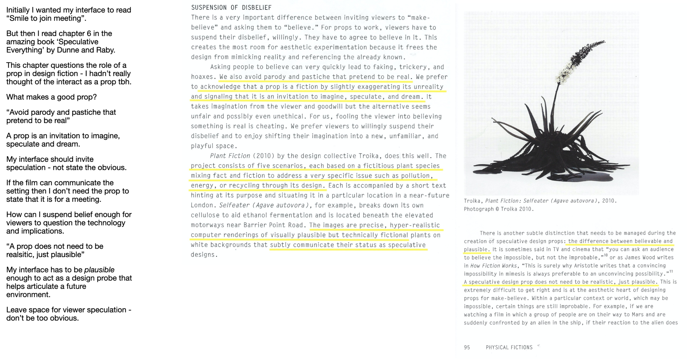
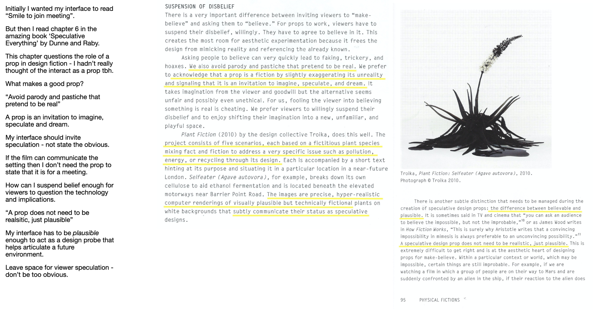
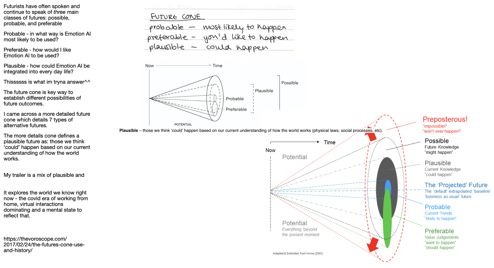
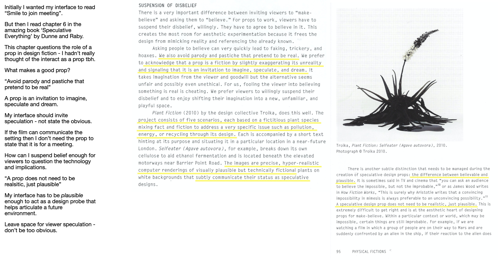

Research

 


Personal Project
HTML, CCS, Premiere Pro
A speculative future where a smile is a form of currency. The short film traces the deteriorating relationship with a new form of emotion recognition technology.
Rooted in research of emerging technology and 19th century experiments in neurology, the film explores themes of racial bias, fake positivity and surveillance capitalism.
